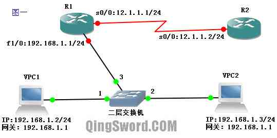

[CCNA图文笔记]-31-NAT协议实例详解
引言
这篇文章介绍Cisco路由器上NAT（Network Address Translation，网络地址转换）的基本配置，包括：静态NAT、动态NAT、PAT以及静态端口映射。
文章目录
0×1.NAT概述
简单的来说，NAT是将私有IP地址通过边界路由转换成外网IP地址，在边界路由的NAT地址转换表中记录下这个转换，当外部数据返回时，路由使用NAT技术查询NAT转换表，再将目标地址替换成内网用户IP地址。
RFC1918规定了三块专有的地址，作为私有的内部组网使用：
A类：10.0.0.0—10.255.255.255
B类：172.16.0.0—172.31.255.255
C类：192.168.0.0—192.168.255.255
这三块私有地址本身是可路由的，只是公网上的路由器不会转发这三块私有地址的流量；当一个公司内部配置了这些私有地址后，内部的计算机在和外网通信时，公司的边界路由会通过NAT或者PAT技术，将内部的私有地址转换成外网IP，外部看到的源地址是公司边界路由转换过的公网IP地址，这在某种意义上也增加了内部网络的安全性。
三种常用的NAT技术：
静态NAT：静态NAT就是一对一的NAT，内部有多少私有地址需要和外部通信，就要配置多少外网IP地址与其对应。
动态NAT：动态NAT是在路由器上配置一个外网IP地址池，当内部有计算机需要和外部通信时，就从地址池里动态的取出一个外网IP，并将他们的对应关系绑定到NAT表中，通信结束后，这个外网IP被释放，可供其他内部IP转换使用，这和DHCP租约IP有相似之处。
PAT(Port address Translation，端口地址转换，也叫端口地址复用)：这是最常用的NAT技术，也是IPv4能维持到今天的最重要原因之一，它提供了一种多对一的方式，对多个内网IP地址，边界路由可以给他们分配一个外网IP，利用这个外网IP的不同端口（不同的端口对应不同的内网IP）和外部进行通信。
0×2.在Cisco路由器上配置NAT
a.如何配置静态NAT
请看下面这张拓扑图，VPC1和PVC2是使用VPCS模拟的两台计算机，连接在GNS3中的不可网管二层交换机上（Ethernet switch），它们处于同一个内网环境，路由均为c3640，R1是这个内网的边界路由，R2是公网上的一台路由器（可以看做是ISP的路由器）,各设备IP配置如图所示：
通过在R1上配置静态NAT，让VPC1和VPC2通过两个静态分配的公网IP和R2通信。
首先配置VPCS中的两台虚拟计算机的IP：
VPCS> set pcname VPC1 VPC1> ip 192.168.1.2 24 192.168.1.1 Checking for duplicate address... PC1 : 192.168.1.2 255.255.255.0 gateway 192.168.1.1 VPC2> ip 192.168.1.3 24 192.168.1.1 PC2 : 192.168.1.3 255.255.255.0 gateway 192.168.1.1
配置R1使用静态NAT：
/*配置内网网关接口*/ R1(config)#int fa 1/0 R1(config-if)#ip add 192.168.1.1 255.255.255.0 /*这个接口是内网接口，需要配置成NAT对内接口*/ R1(config-if)#ip nat inside R1(config-if)#no shut /*配置与ISP相连的外网接口*/ R1(config-if)#int s 0/0 R1(config-if)#ip add 12.1.1.1 255.255.255.0 /*配置成NAT对外接口*/ R1(config-if)#ip nat outside R1(config-if)#no shut R1(config-if)#exit /*配置静态转换条目，每个内网IP需要和一个外网IP对应*/ R1(config)#ip nat inside source static 192.168.1.2 12.1.1.20 R1(config)#ip nat inside source static 192.168.1.3 12.1.1.30 R1(config)#end
配置R2：
R2(config)#int s 0/0 R2(config-if)#ip add 12.1.1.2 255.255.255.0 R2(config-if)#no shut R2(config-if)#end /*在R2上开启ICMP调试*/ R2#debug ip icmp ICMP packet debugging is on
在VPCS上面进行Ping测试：
/*使用192.168.1.3去Ping*/ VPC2> ping 12.1.1.2 12.1.1.2 icmp_seq=1 ttl=254 time=78.000 ms /* * R2上的ICMP调试输出显示,echo reply的目的地址是12.1.1.30， * 说明R1上的静态NAT是成功的，成功将VPC2的私有IP转换成了公网IP。 */ R2# *Mar 1 00:10:08.383: ICMP: echo reply sent, src 12.1.1.2, dst 12.1.1.30 /*使用192.168.1.2去Ping*/ VPC1> ping 12.1.1.2 12.1.1.2 icmp_seq=1 ttl=254 time=125.000 ms /*R2显示*/ R2# *Mar 1 00:10:24.751: ICMP: echo reply sent, src 12.1.1.2, dst 12.1.1.20
查看R1 NAT地址转换表：
R1#show ip nat translations Pro Inside global Inside local Outside local Outside global --- 12.1.1.20 192.168.1.2 --- --- --- 12.1.1.30 192.168.1.3 --- ---
静态NAT的缺点就是每个内网IP要占用一个外网IP，就算这台终端现在处于关闭状态，这个外网IP也被静态分配占用着，动态NAT可以很好的解决这个问题。
b.如何配置动态NAT
使用上面的图1作为拓扑，图中VPC1、VPC2和R2的配置保持不变，重新配置R1，使用动态NAT：
R1(config)#int fa 1/0 R1(config-if)#ip add 192.168.1.1 255.255.255.0 R1(config-if)#ip nat inside R1(config-if)#no shut R1(config-if)#int s 0/0 R1(config-if)#ip add 12.1.1.1 255.255.255.0 R1(config-if)#ip nat outside R1(config-if)#no shut /* * 配置外网地址池,poolname1是这个地址池的自定义名称, * 外网地址池范围从12.1.1.20-12.1.30，11个可用于转换的IP地址， * 子网掩码24位。 */ R1(config)#ip nat pool poolname1 12.1.1.20 12.1.1.30 netmask 255.255.255.0 /* * 设置一个ACL来允许哪些内网IP被转换， * 这里是192.168.1.0/24网段都允许被转换。 */ R1(config)#access-list 1 permit 192.168.1.0 0.0.0.255 /*开启动态NAT，允许ACL 1中的私有地址转换成poolname1中的外网IP*/ R1(config)#ip nat inside source list 1 pool poolname1 R1(config)#end
在VPCS中Ping测试：
VPC1> ping 12.1.1.2 12.1.1.2 icmp_seq=1 ttl=254 time=94.000 ms /*R2的ICMP调试输出*/ R2# *Mar 1 00:43:05.727: ICMP: echo reply sent, src 12.1.1.2, dst 12.1.1.20 VPC2> ping 12.1.1.2 12.1.1.2 icmp_seq=1 ttl=254 time=78.000 ms /*R2的ICMP调试输出*/ R2# *Mar 1 00:43:18.431: ICMP: echo reply sent, src 12.1.1.2, dst 12.1.1.21 /*查看R1的NAT转换表*/ R1#show ip nat translation Pro Inside global Inside local Outside local Outside global --- 12.1.1.20 192.168.1.2 --- --- --- 12.1.1.21 192.168.1.3 --- --- R1#
NAT动态转换介绍完了，下面介绍PAT端口转换。
c.如何配置PAT
图1中其他设备配置保持不变，重设R1（右击R1，stop->start），配置PAT：
R1(config)#int fa 1/0 R1(config-if)#ip add 192.168.1.1 255.255.255.0 R1(config-if)#ip nat inside R1(config-if)#no shut R1(config-if)#int s 0/0 R1(config-if)#ip add 12.1.1.1 255.255.255.0 R1(config-if)#ip nat outside R1(config-if)#no shut R1(config-if)#exit /*配置允许转换的内部地址范围*/ R1(config)#access-list 1 permit 192.168.1.0 0.0.0.255 /*ACL1中允许的私有IP地址将会共用R1的s0/0接口外网IP地址*/ R1(config)#ip nat inside source list 1 interface s 0/0 overload R1(config)#end
在VPCS中Ping测试：
VPC2> ping 12.1.1.2 12.1.1.2 icmp_seq=3 ttl=254 time=78.000 ms VPC2> 1 VPC1> ping 12.1.1.2 12.1.1.2 icmp_seq=2 ttl=254 time=94.000 ms /*在R2中显示相同的ICMP调试信息*/ R2# *Mar 1 00:56:43.723: ICMP: echo reply sent, src 12.1.1.2, dst 12.1.1.1 /*查看R1的PAT转换表，可以看到内部IP地址使用了外网IP不同的端口*/ R1#show ip nat translations Pro Inside global Inside local Outside local Outside global icmp 12.1.1.1:17252 192.168.1.2:17252 12.1.1.2:17252 12.1.1.2:17252 icmp 12.1.1.1:21092 192.168.1.3:21092 12.1.1.2:21092 12.1.1.2:21092
PAT的基本配置就是这样，下面介绍如何将内网IP的某端口静态映射到外网IP的某端口。
d.如何配置静态端口映射
在图1中，假设VPC1上面架设了TFTP服务，外网要访问VPC1的TFTP服务就需要将VPC1（192.168.1.2）的69端口映射到外网s0/0（12.1.1.1）的某个端口上，请看下面的实际操作：
/*添加静态端口映射，TFTP使用的是UDP的69号端口*/ R1(config)#ip nat inside source static udp 192.168.1.2 69 12.1.1.1 69 R1(config)#end /*查看NAT转换表*/ R1#show ip nat translations Pro Inside global Inside local Outside local Outside global udp 12.1.1.1:12345 192.168.1.2:69 --- ---
配置完这个静态映射后，外网的用户只需要访问12.1.1.1:69就能访问到内网的192.168.1.2:69，即可通过外网IP访问到内网VPC1的TFTP服务了。